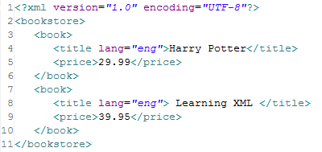
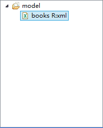

<xml:elseif>
判断Xml语句块
在<xml:if>或者<xml:elseif>后使用，当前面的判断不成立时，进入当前判断。
test（必须） 前面的xml:if或者xml:elseif判断不成立，则进入判断。 使用Xpath判断条件，判断结果成立，则运行xml:elseif块内的代码，否则不运行。 符号 =:等于 !=:不等于 and:与 or:或
trim（可选） 是否保留输出值的前后空白字符 属性 false:保留输出值的前后空白字符（默认） true:删除输出值的前后空格（包括换行符）
使用Xpath表达式判断Xml。在test中，输入Xpath表达式，表达式成立，则执行xml:if块内的内容，不成立，则跳过或者进入下个判断语句快（如<xml:elseif>或<xml:else>）。
常用判断符号
=:等于 !=:不等于 and:与 or:或 >:大于 >=:大于等于 <:小于 <=:小于等于
这是一个xml文件

我们将它添加到我们的模型后。

(添加Xml模型的方法请参考：转换xml模型)
在模板中，我们选择这个模型，以便我们在模板中能提示出对应的内容。
如果选的只是模型组，则xml标签需要指定relation

如果选的是模型，则xml标签不需要指定relation


关于Xml标签的使用方法请参考：xml标签
设置变量book
运行结果